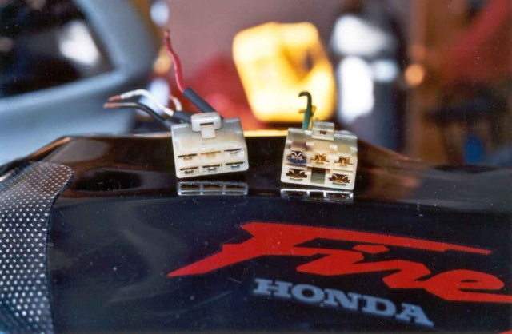

How to tell if your reg/rec is about to die
When the r/r dies, it can do so in many different ways. If you get unlucky, it can go out spectacularly and take a lot of the rest of the bike's electrical systems out with it (I've seen fried ECUs from this for example). If you're really lucky it will die with a quiet whimper, going open-circuit and all you get is a trashed battery. When I teach people stuff, I usually find that it is better to give them the understanding of why something happens, not just how to fix it after it happens. So this little screed is going to head back to the very basics to start with.
Understanding why a r/r dies is a large part of the problem. The r/r's job is to provide a constant DC voltage and current to the bike's electrical system. From this all the electricals run. To do this, requires something to provide electrical input so that it can provide the output. ie it requires the motor spinning so that the stator (alternator in a car) can provide the AC voltage needed. But, if all we had in the bike was a the r/r and the stator, we'd have a bad chicken and egg problem. Unless you're a two stroke, MX bike or a pre-1980's bike with a kick starter, you need some way of turning the engine over in the first place. For us, that requires the use of starter motor. To run a stater motor requires electricity, but to generate electricity the r/r needs the motor running.... enter the battery. On a motorcycle (and typically on a car too) the battery has exactly one function - to power up the engine before it can become self-suffcient through the stator + r/r pairing.
Yeah, yeah, get on with why it dies....
Ok, so now we know we need to use the battery to start the bike, but batteries wouldn't last very long if they just started the bike. So one of the things that the output of the r/r is used for is to recharge the battery. A bit of the output is trickle fed into the battery to keep it topped up so that next time you need to start the bike it can. You can't just instantly top up the battery (well you could, but that normally results in acid and hydrogen gas being randomly distributed around your bike and garage in a rather rapid manner). So charging the battery back up from the hit it took while starting your bike takes some time. A good guesstimation is about 8 to 10 minutes from the time you kick the bike over. If you ride your bike around for short stints, like down to the shop of for a couple of mile commute to work, your battery will get progressively flatter. The flatter your battery gets, the more work you have to put into it to bring it back up to snuff.
For charging a battery, raising the voltage going into it is not going to help make it charge faster. After all, the job of the "regulator" part of the regulator/rectifier is to keep the voltage at a constant level. If you can't up the voltage, the only thing that you have available is to change the current. Because we're talking electrical systems here, that means the hamsters have to spin in the cage faster. Or, for the less technically inclined, the r/r has to put out more current.
Flat battery leads to current, current leads to heat, heat leads to the dark side....
of your r/r terminals. All that extra current that is now being pushed out by the r/r results in greatly increased heat being pushed through the wiring of your bike. That heat, when the current gets high enough causes the wiring to char or melt, and also starts to lead to the internals of your r/r frying itself. Don't believe me? Have a look at this shot of the plug off my VTR. We caught it just before it died:

You can always tell that a r/r is on the verge of dying by looking at the leads that are on the way into it and/or the connectors just downstream - they'll be a nice dark brown or charcoal colour. That's the rubber burning due to the excessive amounts of current that has been put through it. And, as an extra killer, the r/r is not capable of producing enough current when the bike is at idle, only when it's off idle. If you spent a lot of time trundling around in stop-go city traffic, most of the time the bike is not charging the battery, so when you get off idle it has to try extra hard to charge the battery in as little time as possible. More current, more heat, faster death.

In my experience, the bikes that suffer regular r/r failures are the ones that get used as runabout bikes. Driven down to the shops, over to a mate's place, lots of short rides or used very infreqyuently, where the r/r is continuously stressed to recharge the battery. On bikes that are used daily as a long distance commuter, the r/r failure rate is heaps less. My VTR one was just replaced this w/e with over 60,000km on the clock - most VTR's and VFRs that I know that shit the r/r do it at 30-35 thou and it is precisely because of this different usage patterns (FWIW, I used to commute in Sydney 1:20min each way clocking up well over 1000km a week).
It is a good maintenance procedure to lift the seat once a week and have a look at the leads coming out of the r/r. Check for signs that they're overheating. Maybe the color has lost the glossiness to it, or that they are starting to "fatten up" - particularly around the first connector downstream from the r/r. If they get to the point of being a nice burnt charcoal color, DO NOT RIDE THE BIKE. If you do, you are inviting disaster. A couple of days without the bike is far better than having to spend a couple of thousand bucks replacing the ECU, all the globes and fuses (yes, I've seen this happen more than once, it's not pretty). If the r/r fails by going closed-circuit it is going to dump completely unregulated current through your entire bike, you'll get biiiig voltage spikes and lots of smoke is going to leak out from all sorts of interesting places.
If you have discovered that the r/r is on its way out, you'll need to replace it. I've written a separate article explaining How to replace your reg/rec. Tip - don't buy another Honda unit.
<rant> People think that they can save the r/r from dying by putting a PC fan on it. That's rubbish, it doesn't work. Although you might keep the externals of the r/r cool, it is the internals that fry - not to mention the leads 3 inches from the r/r where the fan isn't. The heat sink is OK, but the heat stress of being really hot in the middle and frozen cold on the outside where the fan is certainly doesn't make the situation any better either. Remember that it is not just the temperature that kills the r/r, it's the current that it has to generate in the first place. You might be able to garner an extra couple of month's life out of the r/r but the wires with a fan just out of the r/r are still going to burn to a crisp too. When they go, they short and pow, up go your bike electrics. The r/r is still going to die - particularly if you draw large amounts of current out of it for periods longer than it's design life (which is the case of almost every honda r/r since the late 80's). If you use a r/r that can handle the current demands required, it won't die. Honda have fucked up and just put on underqualified parts for the duty required. No other brand of bike has this problem and I don't understand why they persist in it. </rant>